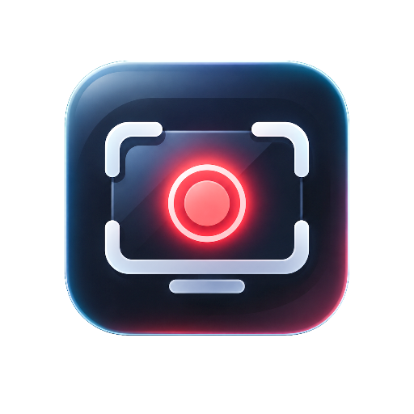

Capture with precision
Display and window workflows with a responsive, compact native Windows interface.

Windows · Native capture · Precise presentation
A focused Windows screen recorder with clean controls, hardware-backed video capture, and thoughtful on-screen presentation tools.
Display and window workflows with a responsive, compact native Windows interface.
Thoughtful cursor, zoom, click, and shortcut visualization designed for tutorials.
Choose a source, record, stop, and open your MP4 directly in the GUI.
Current public release builds are video-only. Stereo microphone/system-audio recording is under internal hardware acceptance; audio-enabled packages are not yet public stable releases.